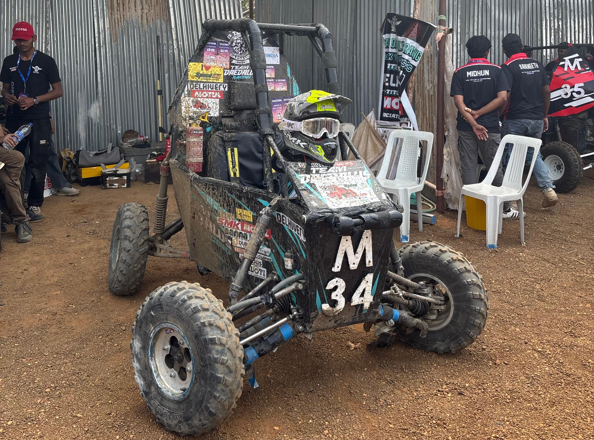
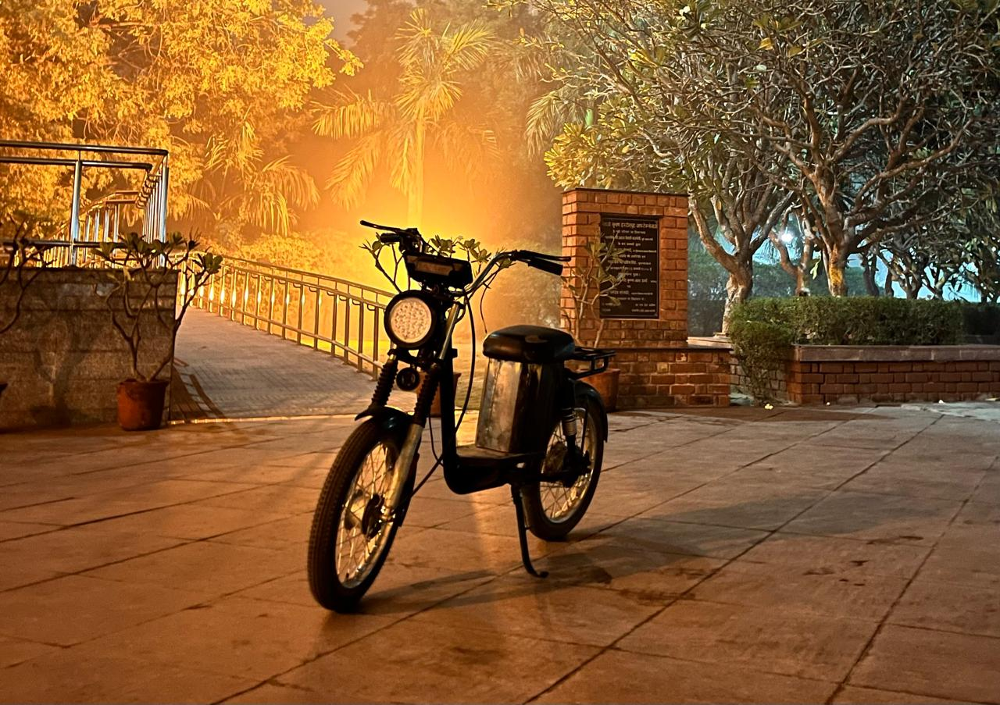
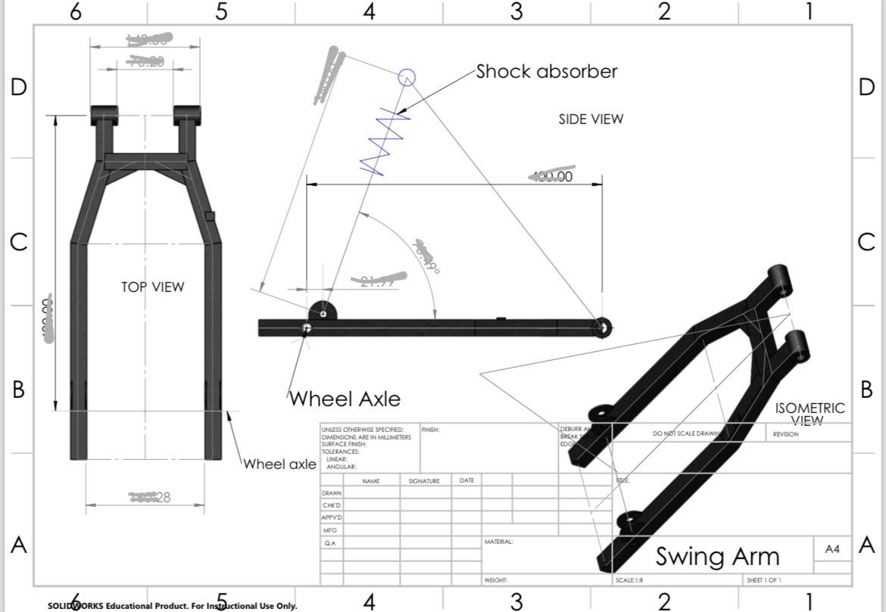

Selected Work
Projects.
Click any project card to open its full case study website.

— 01 / 03
Dune Buggy OFF-ROAD
Designed from concept to Final CAD Prototype with FEA optimised Roll Cage
Open Project Site →
— 02 / 03
BAJA ATV 2026
Lightweight tubular steel chassis with torsional rigidity and crash simulation studies. 15% weight reduction over benchmark.
Open Project Site →
— 03 / 03
Electric Delivery Moped ⚡
Designed and developed an electric delivery vehicle prototype under tight cost and time constraints. Worked on chassis design, suspension integration, battery packaging, fabrication support, and real-world testing with multiple design iterations.
View Case Study →
— 04
Electric Scooter — Chassis Design (In Progress)
Self-initiated electric scooter project focused on chassis stiffness, suspension mounting geometry, and impact load resistance. Frame is being developed in CAD and validated using FEA before fabrication. Currently in chassis design and structural validation phase.
Project in Progress 🚧
— 05
Additional Design Work
Collection of CAD models created during various design explorations, practice sessions, and mini projects. Includes mechanical parts, assemblies, suspension components, and concept structures built to improve modeling speed, design thinking, and engineering accuracy.
Open Gallery →